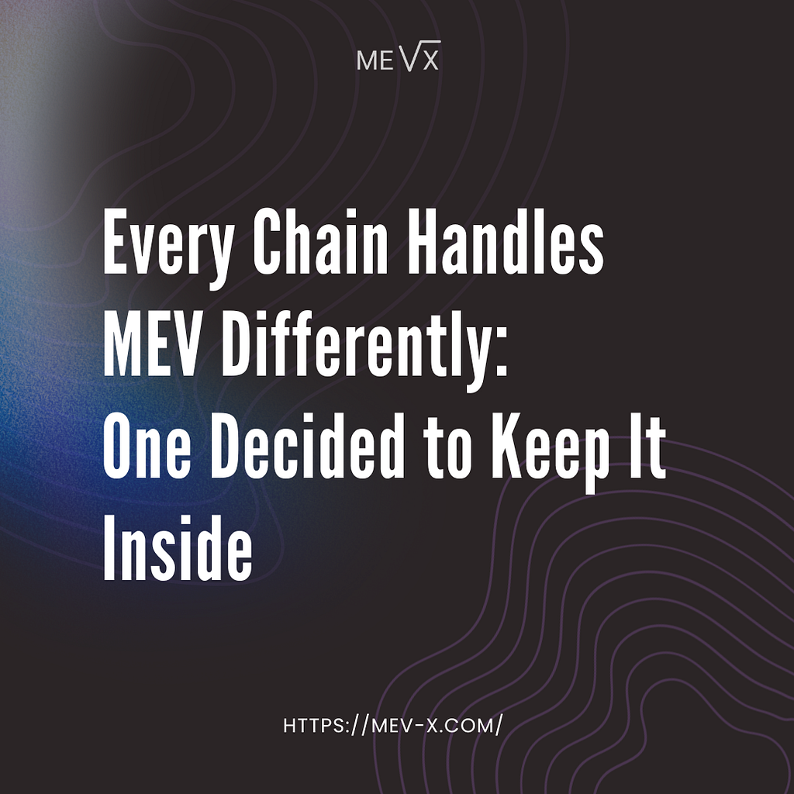
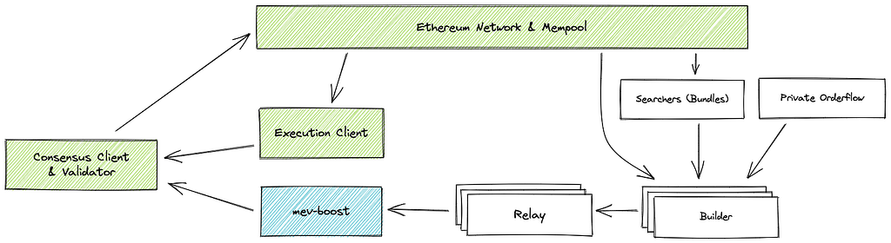
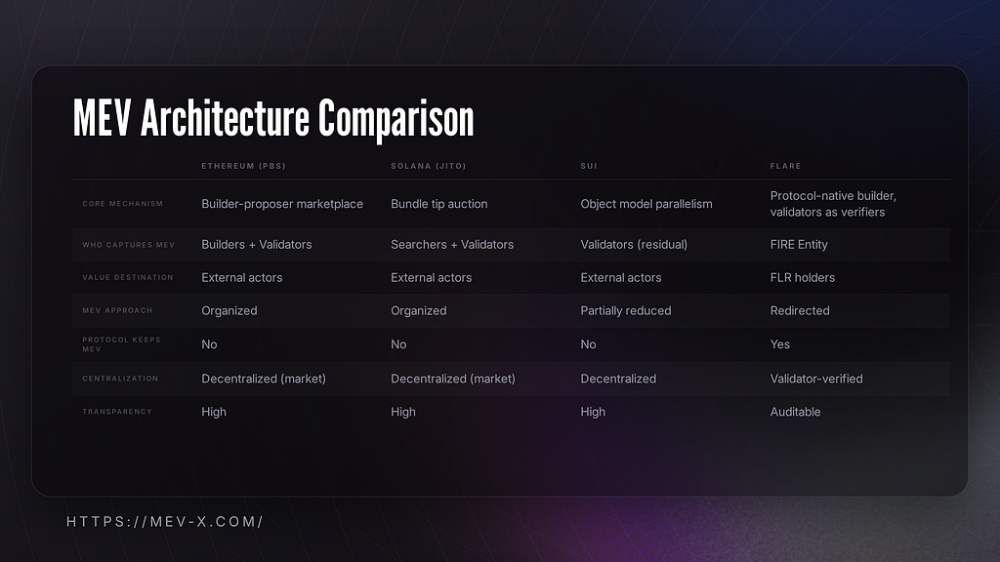
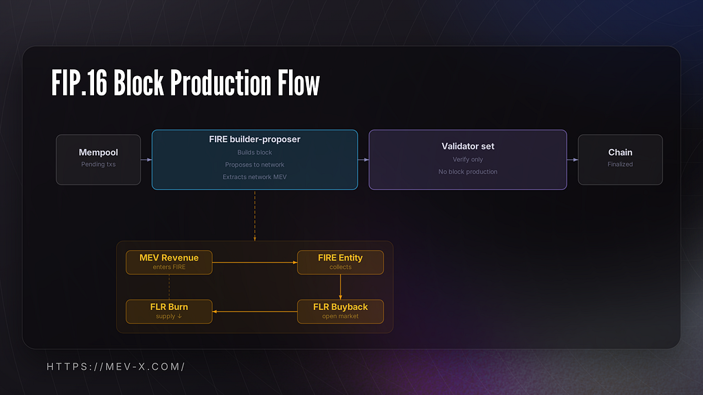

MEV (Maximal Extractable Value) has been blockchain’s defining unsolved problem since Paradigm published their “dark forest” paper in 2020. The concept has reframed how the industry thinks about block production, transaction ordering, and who actually profits from on-chain activity.
Six years later, every major chain has built an answer to this. The approaches are genuinely different: organized auctions, bundle marketplaces, architectural countermeasures baked into the execution model. But most of those answers share a common assumption: MEV extraction is inevitable, so the question is just who captures it.
Today we want to break down one of the most architecturally interesting proposals we’ve seen in the space that challenges that assumption at the architecture level: Flare’s FIP.16, passed in April 2026 with 98% validator approval.

MEV Architecture Landscape
Before getting to Flare, it’s worth mapping how the rest of the industry answered the MEV question. Each of the approaches below represents a distinct architectural response to the same underlying problem, drawing on different assumptions about consensus, execution, and incentive alignment. Yet for all their technical divergence, a closer reading of the economics reveals a logic that remains largely consistent across each.
Ethereum: Proposer-Builder Separation
Ethereum’s approach to MEV is formalized through Proposer-Builder Separation, implemented via MEV-Boost adopted at the time of The Merge in September 2022.
Under the standard validator model, validators both propose and build blocks, giving them direct visibility into the mempool and the ability to reorder, include, or exclude transactions for profit. PBS separates these two roles. Builders (specialized entities with access to private order flow and searcher bundles) construct full blocks optimized for maximum extractable value. Validators (proposers) no longer build blocks themselves, instead, they receive block headers from multiple builders via relays and select the one with the highest attached bid. The validator signs and proposes the winning block without seeing its full contents.
The full flow: searchers identify MEV opportunities and submit bundles (atomic sets of ordered transactions) to builders. Builders incorporate bundles into blocks alongside regular mempool transactions, ordering everything to maximize total value. They then submit their blocks to one or more relays, which verify block validity and pass headers to validators. Validators running MEV-Boost select the highest-value header via a blind auction and propose the corresponding block.

This mechanism transforms MEV from a chaotic, validator-level activity into a structured market with defined participant roles: searchers, builders, relays, and validators. Over 90% of Ethereum validators currently run MEV-Boost, making it the de facto standard for block production on the network.
Solana: The Bundle Marketplace
Unlike Ethereum, Solana has no traditional mempool. Transactions route directly to the current block producer through Gulf Stream, Solana’s forwarding protocol, and block slots rotate every ~400ms, each assigned to a designated leader validator. Without a mempool, the primary MEV vector shifted to transaction spam: bots submitting thousands of duplicate transactions to maximize the probability of inclusion ahead of competitors. This created severe network congestion and contributed to multiple network performance degradations in 2021-2022.
JITO addressed this by introducing a structured off-chain marketplace for transaction ordering. Validators running the modified Jito-Solana client connect to the JITO Block Engine, which operates outside the core protocol. Searchers submit bundles (groups of up to five transactions that execute sequentially and atomically) alongside a lamport-denominated tip. The Block Engine simulates incoming bundles, ranks them by tip-per-compute-unit within 50ms auction windows, and forwards the highest-paying combinations to the active slot leader for inclusion at the top of the block.
Tips flow through two on-chain programs: the Tip Payment program collects them at execution time, and the Tip Distribution program redistributes them to validators and their stakers proportionally at the end of each epoch. By 2025, JITO tips had grown to represent over 60% of Solana’s priority fee volume. As of 2026, approximately 95% of staked SOL runs the Jito validator client.
Sui: The Object Model
Sui’s approach to MEV is structural rather than market-based, rooted in its object-centric execution model. In Sui, every on-chain asset is an object with an explicit ownership type that determines how it can be accessed and processed.
Address-owned objects belong to a single address and can only be used by their designated owner. Transactions involving exclusively owned objects bypass consensus entirely through the Fastpath mechanism and since no two transactions can contend over the same owned object, no global ordering is required. These transactions are validated via Byzantine Consistent Broadcast and complete in ~400ms without entering the consensus pool. Transactions that touch shared objects must be sequenced through Mysticeti, Sui's DAG-based consensus protocol, which determines a global execution order across all validators. DEX liquidity pools, lending markets, and other multi-user DeFi primitives are implemented as shared objects: they require global ordering by design.
This distinction is where MEV dynamics concentrate. Within each Mysticeti consensus commit, transactions modifying the same shared object are ranked and executed sequentially. Validators run Priority Gas Auctions within commits: transactions compete on gas price for ordering priority. A 70-millisecond submission advantage translates directly into ordering priority within a commit window. Sandwich attacks, arbitrage capture, and latency-based extraction all remain viable on shared objects through this mechanism.
The object model therefore reduces MEV surface area rather than eliminating it. Transactions involving only owned objects have no ordering-dependent MEV exposure. Transactions touching shared objects, the majority of DeFi interactions, retain full MEV dynamics, compressed into the commit granularity of the consensus layer.
Across the Landscape
The architectures described above differ substantially in design, but share a structural outcome: MEV value exits the protocol layer. In each case, the protocol routes it to participants who operate adjacent to consensus.
The same pattern holds across the broader EVM and non-EVM landscape. The common thread is extraction without return: value generated by user activity is captured by external actors and leaves the ecosystem that produced it. It is a deliberate architectural assumption, either made explicitly (as in PBS, which was designed to professionalize block building outside the protocol) or inherited from prior designs.
FIP.16: The Protocol Itself Becomes the Builder
FIP.16 makes the Flare Foundation a designated block builder. Validators fetch pre-built blocks, validate, and finalize, but transaction ordering and the surplus it generates stay inside the protocol.

The captured value flows to FIRE (Flare Income Reinvestment Entity), which also collects FDC attestation fees, FAsset and Smart Account protocol fees, and Flare Confidential Compute charges. FIRE’s mandate is open-market FLR buybacks and burns. The gas base fee increases from 25 to 500 gwei (even at 1200 gwei, standard transactions on Flare remain well under $0.01 at current FLR prices, so the UX impact is immaterial), compressing margins on external extraction strategies.
But the builder is not free to extract anything it can. The proposal defines a category called network positive MEV and restricts the builder to it exclusively: atomic DEX arbitrage and cross-chain CEX/DEX arbitrage; lending protocol liquidations; just-in-time liquidity provisioning for large trades; post-trade arbitrages on Flare DEXes. Sandwich attacks, frontrunning, and generalized extraction are excluded by design.
The reason is obvious: enforcement requires a trusted builder. A permissionless system cannot make this guarantee. FIP.16 solves the enforcement problem by accepting a centralization tradeoff, one builder, initially the Foundation. But it enables something genuinely novel: a protocol that treats MEV not as a market to organize or a problem to suppress, but as a network resource to curate. Liquidations keep lending protocols solvent. Arbitrage keeps prices accurate. JIT provisioning improves execution quality for large orders. The forms of MEV on the permitted list happen to be the ones that, as a side effect, make the network work better.

The result is a closed loop with a normative layer built in: the protocol captures the value, decides what counts as legitimate capture, and returns the proceeds to the ecosystem. Whether the centralization cost is worth it is a reasonable question. But the intellectual move of a protocol having a position on MEV rather than just a mechanism for it is the thing worth paying attention to.
Beyond the Proposal
FIP.16 describes a mechanism with real architectural novelty. What comes next is the empirical layer. How much MEV is FIRE actually capturing per block? What was the extraction baseline on Flare before Stage 1 went live: how much value was leaving the network to external searchers, and through which transaction types? What does the on-chain footprint of protocol-level liquidation or arbitrage look like compared to the equivalent activity on chains where searchers run it? These are answerable questions, and the data that follows will be worth examining.
We build MEV infrastructure. We’ve run extraction across EVM networks and tracked extraction patterns on-chain long enough to know that the gap between architectural claims and measurable outcomes is where the interesting work lives. A protocol can mandate that MEV stays inside the network. Whether it actually does is an empirical question that requires tooling most chains haven’t bothered to build. Flare is the first chain where that tooling has something uniquely consequential to measure, and where the numbers will matter to every participant in the network
FIP.16’s architecture is genuinely novel. The framing of network positive MEV, the normative layer, the closed loop back to token holders, these are ideas worth taking seriously. But the most interesting version of the FIP.16 story is not the proposal but the data that follows. How much value was being extracted before FIRE, and how much is being captured now? Is the surplus going to the protocol or are there still avenues where it isn’t? Those questions will have data and will be interesting regardless of which direction they goes.
We built Homelander: MEV internalization system. For a deeper look at it’s mechanics, check the documentation and our earlier publications (I/II/III). If you’d like to explore an integration or partnership, you can reach us on Telegram.